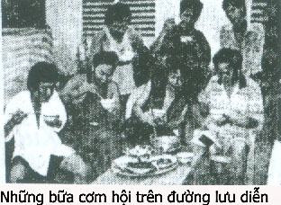

Xem internet, thấy đăng tin nghệ sĩ Kim Tử Long, Ngọc Huyền đi nước Úc, trình diễn cải lương (trong các quán rượu với những trích đoạn cải lương, chớ không phải hát trọn tuồng trong một rạp hát đàng hoàng ), tôi mừng cho các bạn trẻ ngày nay được đi diễn ở những nơi xa xôi bằng phi cơ. Thật là mau lẹ, tiện lợi.
Bỗng nhiên tôi nhớ lại chuyện ngày xưa, cách nay hơn nửa thế kỷ…

.Hơn nửa thế kỷ trước, trong những thập niên 1940, gánh hát còn di chuyển bằng ghe. Bầu gánh, đào, kép chánh thì ở trong ghe chài lớn, mỗi người một phòng, có ngăn vách, có trải thảm trên sàn ghe, có bàn, ghế, tủ đựng quần áo hay vật dụng riêng. Diễn viên phụ, kép dàn bao, vệ sĩ, công nhân dàn cảnh thì ở chung một ghe khác, trải chiếu trên sàn ghe, trai thì ngủ tập trung phía trước mũi ghe; gái ngủ trong khoang ghe; dàn cảnh ngủ trên mui ghe. Thông thường di chuyển một hay hai ngày mới đến bến diễn, cơm nước mỗi ngày cho toàn đoàn là do “tẩm khậu” nấu. Khi diễn ở rạp hát thì ông bà Bầu, đào, kép chánh vẫn ở dưới ghe vì họ có phòng riêng, có đầy đủ tiện nghi; các anh chị đào, kép dàn bao, vệ sĩ hay công nhân sân khấu thì lên rạp hát ở. Họ ở dưới hầm rạp hay chờ khi vãn hát thì kéo ghế của khán giả, kê lại làm chỗ ngủ. Tắm rửa, giặt giũ hay vệ sinh là ngay trong rạp hát. Ban ngày nếu không có tập tuồng mới hay phải dượt lại tuồng cũ cho người thế vai thì thường thường anh em thả rong đi chơi. Những nơi có danh lam thắng cảnh như Huế có lăng tẩm, có đại nội, hay ở Nha Trang, Vũng Tàu, Đà Lạt, họ thường kéo nhau đi ngoạn cảnh.
Dân chúng địa phương thấy đào, kép hát thật là sung sướng, thảnh thơi. Dạo phố thì họ ăn mặc thật đẹp; địa phương nào có món ngon, vật lạ thì dân cải lương có đến ăn thử, thưởng thức.
Có người không thích du ngoạn, thích rượu chè, bài bạc thì tha hồ say sưa hay sát phạt nhau trong rạp hát. Cảnh sát ít khi vô xét rạp hát nên đào kép không bị bắt vì tội “tứ đổ tường”.
Người ngoài chỉ thấy khía cạnh cuộc sống tự do, phóng khoáng của họ, chớ ít ai biết được là cuộc đời giang hồ lảng tử của đào, kép hát đã phải chịu gian khổ, chịu sự chèn ép bất công của những kẻ ỹ thế cậy quyền.
Nếp sống vừa kể trên đây là nếp sống của những nghệ sĩ cải lương các đoàn hát lớn, các đại ban trong những thập niên 1940, 1950. Họ được lảnh lương đầy đủ theo tài năng, theo những xuất hát của Đoàn; việc ăn, ở, di chuyển, tập tuồng và biểu diễn trên sân khấu là do Bầu gánh, Quản Lý và Biện tuồng, Thầy tuồng lo.
Cuộc sống rày đây mai đó, khi thì biểu diễn ở tỉnh này một tuần lễ rồi dọn đi nơi khác, khi thì ở huyện nọ vài ba hôm là đổi bến diễn; nơi nào có rạp hát, có sân bãi để diễn thì có mặt đoàn hát cải lương ở đó. Đoàn hát là một tổ chức có nề nếp, có tôn ti trật tự nên dù luôn luôn di chuyển, đoàn vẫn hoạt động rất hữu hiệu.
Một thời ăn quán ngủ đình
Ở các đoàn hát nhỏ, trung ban, tiểu ban thì phải nói là cuộc sống của anh em nghệ sĩ rất khó khăn. Người ngoài nhìn vào thì nhiều khi thấy thảm thương cho hoàn cảnh nghèo nàn của các nghệ sĩ đó, nhưng chính bản thân, họ thấy bình thường, đôi khi còn tỏ ra thích thú vì cuộc sống “không giống ai” của người nghệ sĩ.
Năm 1948, tôi theo đoàn cải lương Tiếng Chuông của Bầu Cang. Đó là một đoàn hát trung ban. Khi đi hát bán giàn các vùng xa như ở các tỉnh Cà Mau, Bạc Liêu thì ông Bầu mướn ghe chài trung, có tàu kéo nhỏ. Khi hát quanh quẩn ở các quận của tỉnh Cần Thơ, Sóc Trăng, Mỹ Tho hay Bến Tre thì ông Bầu mướn vài ba chiếc đò máy, hoặc nếu có đường lộ thông thương thì ông mướn xe tải, xe đò.
Vận chuyển bằng đò máy hay xe tải nhỏ, anh em trong đoàn hát phải ngồi chen chúc với nhau, đôi khi phải ở trên mui một số người. Khi đến gần bót gác, xe ngừng lại, anh em trên mui xuống đi bộ, qua khỏi bót một đổi, lại lên mui xe mà ngồi.
Có lần, sau đêm diễn ở quận Vũng Liêm, dọn qua chợ Tam Bình, đi đến gần ngả ba lộ tẻ, anh em phải xuống xe đi bộ, qua khỏi bót gác mới lại lên xe. Anh Tám Cao, kép chánh, Trường Xuân, kép độc, ngồi trong xe, cảm giác mệt mỏi, bèn theo các anh dàn cảnh trên mui xe, xuống đi bộ một khoảng đường cho thoải mái. Khi anh em trở lên xe chạy tiếp, đến chợ Tam Bình, xem lại thì không có mặt anh Tám Cao và Trường Xuân. Cả hai khi xuống xe nơi ngả ba lộ tẻ, thấy có gánh bán ốc gạo ở vệ đường, bèn ngồi xuống ăn ốc gạo, uống vài ly rượu đế. Không biết ăn ốc gạo ngon cỡ nào mà hai anh quên cái chuyện phải trở lên xe để đi tiếp. Còn tài xế xe thì chỉ kiểm điểm những người trên mui, hể đủ thì chạy, quên trong xe thiếu hai người. Tám Cao và Trường Xuân không đón xe được, đành phải lội bộ.
Đêm đó hát tuồng “Trộm Mắt Phật”, Trường Xuân đóng vai A Bu, đi cà nhắc vì lội bộ bị phồng chân. Còn Tám Cao thủ vai A La Đanh, thỉnh thoảng bỏ chạy nhanh vô buồng, bỏ mặc cho A Bu hát cương một mình vì Tám Cao ăn ốc gạo, bị Tào Tháo rượt.
Hát ở quận Tam Bình, đoàn hát bao nhà lồng chợ bằng cà-tăng, lấy thùng phuy xăng kê chen lại, gác ván lên làm sân khấu. Tối lại, khi vãn hát, một số đào kép phụ thì ngủ lại trong chợ, số đào kép chánh, kép độc Trường Xuân và ông bà Bầu thì ở trong đình Thuận Hóa gần bờ sông.
Thời buổi này đang còn chiến tranh, lính “Bạt-ti-dăng ” dặn là đêm tối, bất cứ ai cũng không được đi ngoài vòng rào đình.
Những người ngủ ở trong chợ thì cũng không được đi ra khỏi chợ trước khi trời sáng vì họ sợ Việt Minh lẻn vào gây rối.
Trong đình ẩm ướt, nhiều bụi bặm, mùi mốc đến khó thở, cô đào trẻ đẹp nhứt của đoàn là Ngọc An kêu mấy anh dàn cảnh che bốn tấm panneaux bao quanh ghế bố của cô sát phía vách sau của đình để cô ngủ.
Đêm đó, lính Bạt-Ti-Dăng đi tuần, thấy có bóng người bò bò gần gốc cây da sau đình, lớn tiếng hỏi: “Ai? Đứng lại! Nếu chạy tôi bắn!” Bóng đen vụt chạy vô sau đình, lính bắn một cái đùng, bóng đen phóng vô dàn panneaux che chỗ ngủ của Ngọc An nghe cái rầm. Ngọc An đang ngủ, bị panneaux đè, tưởng bị cướp, phát la lớn: “Bớ mã tà, bớ cảnh sát, cướp! Cướp!”. Bóng đen bụm họng Ngọc An, năn nỉ: “Đừng la! Qua đây nè em!”
Lính rọi đèn pin vô đình, hò hét, quát tháo, bảo ông Bầu bắt người lạ mặt mới chạy vô đình giao cho bót. Ông Bầu cho đốt đèn manchon cho sáng để lính vô xét. Đào kép ngủ trong đình phải ngồi xếp hàng dưới đất để lính với ông Bầu điểm danh. Ồng Bầu phân trần: ” Đâu có người nào lạ mặt chạy vô đây!”
Chúng tôi đều biết vắng mặt một người, nhưng vì có lính ở đồn tới xét nên chúng tôi im lặng, không muốn rắc rối. Bỗng chị Tám Cao phát la lớn: “Rồi, tôi biết là thằng nào mới chạy đó. Mấy chú xách đèn theo tôi, đi bắt bợm!”
Tôi kéo tay chị Tám lại, nói:” Chị Tám, bộ chị mớ ngủ hay sao mà nói gì kỳ vậy”?
Chị Tám vẫn la lớn:” Thằng chả! Tôi biết là thằng chả đi o mèo, bị bắt quả tang nên chạy đó, chớ chẳng có ai trồng khoai ở đất này”.
Ông Bầu, lính và chúng tôi theo chị Tám ra sau đình, rọi đèn thấy Tám Cao đang ngồi chung ghế bố với Ngọc An, mền quấn ngang bụng.
Chị Tám la: “Đó! Đó! Tôi nói có sai đâu. Tổ nghiệp ơi Tổ nghiệp! Ngó xuống mà coi! Đã có vợ có con mà còn đèo bòng thêm vợ bé vợ mọn. Tổ nghiệp ơi, coi nó giựt chồng tôi nè Tổ nghiệp. ”
Chị Tám ôm mặt khóc bù lu bù loa. Ngọc An cũng khóc, kêu oan. Ông Bầu bảo Tám Cao phải khai thiệt, đừng để rắc rối trong đoàn.
Tám Cao tức quá, nhảy xuống đất, quăng cái mền ra, xây lại: ” Đây nè! Một quần đây nè! Tao ăn ốc gạo, bị phá bụng, ra gốc da, tính xổ bầu tâm sự, mấy ổng thấy bóng đen, mới kêu lên là bắn liền, hỏng chạy núp vô đây thì núp ở đâu?”
Ông Bầu với mấy chú lính ôm bụng, cười bò ra. Ngọc An được giải oan, khóc ồ ồ: ” Đó! Rồi ai lo giặt mùng, mền, ghế bố cho tôi? Ổng xổ đầy ra đó. Tôi sợ mấy ông lính nên cắn răng mà ngồi chịu trận, vậy mà chị Tám còn chưởi bới tôi nữa. Ngày mai, tôi về Sàigòn, hỏng hát nữa…”
Chị Tám ghen ẩu, mắc cỡ, nói lảng chuyện khác: ” Đi! Ông Nội! Đi tắm rửa rồi tôi lấy quần áo cho mà thay. Ngày mai, mướn người ta giặt đồ, đền bù cho Ngọc An.”
Vợ chồng Tám Cao kéo nhau đi ra ao nước trước đình, mấy chú lính biểu xách theo chiếc đèn manchon. Bà Bầu biểu Ngọc An vô ngủ gần bà, ngủ trên cái ghế trường kỹ trước bàn thờ thần Thành Hoàng Bổn Cảnh.
Trường Xuân nheo nheo đôi mắt, nói với tôi bằng một giọng buồn buồn:
– Cái thân mình Ăn Quán Ngủ Đình, trong lúc chiến tranh, rắc rối sơ sơ vầy là có Tổ nghiệp phù hộ cho, chớ nếu không thì phát súng ban nảy làm cho Tám Cao đổ ruột, chớ không phải sợ tới “vãi” ra một quần như vậy đâu.
Chỉ Có trong Giấc Chiêm Bao, Mới Có Đi Ăn Tiệc!
Số diễn viên phụ, các công nhân sân khấu, ngủ tại chợ thì còn nhiều chuyện nhiêu khê.
Vãn hát thì đã hơn 11 giờ khuya, loay hoay rửa mặt, thay đổi xiêm y, ăn uống xong, dọn dẹp để ổn định chỗ ngủ thì cũng hơn 12 giờ. Người nào cũng tranh thủ ngủ ngay vì sau đêm hát quá mệt, họ cần ngủ để lấy lại sức khỏe.
Nhưng mới 5 giờ sáng hôm sau thì người mua kẻ bán ở chợ đã tấp nập, ồn ào. Những ai trong đoàn hát ngủ trong chợ thì giờ chợ nhóm cũng phải thức dậy, dù ngủ chưa đã thèm, họ vẫn phải cuốn mền, xách gối, dẹp mùng, kẻ nào còn buồn ngủ quá thì vô đình, làm thêm một giấc.
Ai có tiền thì lại quán cà phê, làm một cái xây chừng (tức là ly cà phê đen nhỏ ).
Trong đoàn có một em vệ sĩ (chuyên đóng quân ) tên Sáu, có biệt danh là Sáu Đá, vì em ngủ mê, muốn đánh thức, phải đá đít ít nhứt là sáu cái đá, em mới chịu dậy. Vì biết tật mình mê ngủ, em Sáu Đá lúc dọn tới bến diễn mới là em dành chỗ ngủ trước, trải chiếu, dành phần.
Khi đoàn hát di chuyển bằng ghe thì em ngủ dưới ghe, nơi mà em có thể ngủ tới bao lâu cũng được. Hát đình, hát chợ thì em dành chỗ dưới gầm sân khấu; dù nhóm chợ hay cúng đình, chỗ đó cũng được an toàn, không ai tới đuổi em đi.
Hát ở chợ Tam Bình lần này, em theo xe chở đồ dàn cảnh, xe hư dọc đường nên gần sáu giờ chiều mới đến bến diễn, những chỗ ngủ tốt thì các anh em tới trước đã dành hết rồi, em đành chọn thớt thịt trong chợ làm chỗ ngủ để qua đêm.
Thớt thịt rộng, dài như bộ ván nhỏ, tuy còn hôi mùi thịt mở, nhưng em lấy banderole cũ trải lên, rồi thêm một chiếc chiếu lên trên nữa thì giống như một bộ ván gỏ của nhà giàu, em nằm được thẳng lưng, ngay cẳng, khoái quá, em cười hô hố rồi la lớn: “Bữa nay trẩm ngự giữa long sàng. Quân bây có nhậu thì nói cười nho nhỏ cho trẩm an giấc điệp, nghe không?’
Vài phút sau là nghe tiếng ngáy ồ ồ…Sáu Đá ngủ say mê, tưởng chừng trời long đất lở, em cũng bất cần.
Tối đó, cô Lệ Thắm, vợ của Tuấn Sĩ nấu cháo vịt, đánh tiết canh để vãn hát bán cho anh em trong đoàn. Tuấn Sĩ, Hề Lòng, Văn Bảnh, Thu Cúc rủ tôi ở lại nhà lồng chợ để ăn cháo vịt, nhậu đế và đàn ca rỉ rả chơi, có ông xếp bót và vài chú lính tới nhậu nữa. Tôi không thể từ chối, đành ở nhậu xã láng một đêm, tới sáng vô đình, chun dưới bàn thần để ngủ bù vì ban ngày không có tập tuồng nên không sợ mệt.
Đêm đó, Năm Khạp đờn kìm, Ngọc Sáu đờn cò, Tuấn Sĩ, Hề Lòng, Lệ Thắm, Thu Cúc ca thật là mùi. Ông xếp bót ngứa miệng, cũng ca bản Xuân Tình: “Tống Tửu Đơn Hùng Tín” hơi ca rỗn rãng, chắc nhịp. Khi ông ta kêu “Bớ Trình Giảo Kim!” tụi tôi năm sáu người có mặt, rượu vô ngà ngà rồi nên hè nhau: ” Dạ, có đệ đây, hiền hữu có điều chi dạy bảo? ”
Ông xếp cao hứng, ca hết bài này tới bài khác. Rồi ổng bảo 1ính ca… Ông nói:
– Tụi bây hát hồi tối rồi, khuya này để gánh bầu Tèo của tụi tao ca. Bây lo ăn cháo, nhậu lai rai, nghe hát nhớ vỗ tay. Tao ca mà hỏng vỗ tay, tao bắt vô bót, tao cạo đầu bây đó.
Cuộc vui không kể giờ giấc. Trong xóm có tiếng gà gáy nhìn ra bốn hướng đường dẫn tới chợ, nhiều ngọn đèn dầu nhấp nháy như sao trời một tối không trăng…Bạn hàng chợ, bưng hay gánh hàng, mỗi người đều phải cầm một cây đèn dầu, đèn cóc hay đèn bão để chứng minh mình là người dân chơn chất làm ăn.
Những chùm ánh sáng vàng le lói đó như bị hút về hướng chợ, càng lúc càng nhiều. Tiếng bạn hàng chợ càng lúc càng ồn ào hơn; chúng tôi thu dọn mùng, mền, chén dĩa, ly nhạo để trả chợ cho người mua kẻ bán.
Trời sáng dần. Tôi nghe tiếng một chú chệt la: “Hầy! Lứ dậy li chứ. Lứ ngủ hoài Úa nàm sao bán thịt? Dậy li! Chả thớt thịt cho Úa. Chời ơi, ngủ hoài, kêu hỏng dậy. ”
Tôi biết là Sáu Đá ngủ trên thớt thịt, ông Tàu kêu mà em ngủ say quá, không thức dậy nổi. Hề Lòng nói: “Để tôi đá vô đít nó sáu đá thì nó mới thức dậy”.
Tôi bảo: “Đừng, nếu nó không thức thì tụi mình hè nhau khiêng nó vô đình cho nó ngủ tiếp. Khi nào ngủ đã rồi thì nó dậy, khỏi kêu. ”
Lệ Thắm bước tới ra dấu cho chú chệt khỏi nói khỏi la nữa, cô mua một miếng thịt heo quay, cầm thịt heo quay nhử nhử trước mũi, miệng của Sáu Đá. Chúng tôi tới gần coi Lệ Thắm làm gì. Trong thâm tâm, tôi không muốn cho Lệ Thắm đùa như vậy, vì tôi cảm giác như chính mình bị xúc phạm. Tôi cũng “Ăn Cơm Cải Lương “, dân cải lương ngủ đình, ngủ chợ đã là một sự sỉ nhục, phù hợp với cái thành kiến muôn đời “xướng ca vô loài”. Nay đem thịt heo quay thơm phức, nhử trước mũi, nếu trong giấc mơ, Sáu Đá liếm mép, hay cắn đại một cái, có phải là người trong giới mình đi bêu rếu mình không? Tuy nhiên con người soạn giả, tâm hồn một nhà văn trong tôi, lại muốn để yên để xem một con người đói ăn, đói uống, đói ngủ thường trực sẽ phản ứng ra sao trước cái cám dỗ của vật chất, nhất là trong lúc ngủ, nghĩa là trong lúc mình không ý thức được việc làm của mình.
Tiếng cười ồ và tiếng vỗ tay của những người chung quanh cắt đứt giòng tư tưởng của tôi. Em Sáu Đá trong giấc mơ, tưởng đang ăn tiệc, nên em liếm mép, rồi đưa tay cầm miếng thịt heo quay, cắn, nhai một cách ngon lành. Tiếng cười nói ồn ào cộng với vị mặn của thịt heo quay đã đánh thức em. Sáu Đá ngỡ ngàng ngó mọi người, xấu hổ vì ngủ giữa chợ, trước mắt một đám đông, nên lồm cồm ngồi dậy, quơ tay ôm chiếu, mền, banderole, tay kia vẫn cầm miếng thịt heo quay, vừa cắn vừa đi về phía đình như không có chuyện gì xảy ra cả.
Mọi người chứng kiến việc vừa rồi coi như tấn tuồng đã chấm dứt, người mua kẻ bán trở lại với sự bận tâm của họ. Chú chệt bày thịt ra thớt, cầm dùi sắt, mài dao nghe ren rét. Tôi cảm giác như dao cứa vào trái tim của tôi, đau nhói. Tôi đi về phía đình, kêu Sáu Đá lại hỏi:” Tại sao lúc nảy em ăn miếng thịt heo quay đó mà không hỏi là của ai? Em đã thức rồi mà còn giả vờ ngủ để được ăn heo quay, phải vậy không”?
Sấu Đá ngơ ngác, không hiểu tại sao tôi hỏi với vẻ bực tức. Em nói:
– Em nằm mơ, thấy được ăn thịt heo quay nhân ngày giổ Tổ. Vậy đó, em ăn. Chỉ trong dịp giổ Tổ, tụi em mới có thịt heo quay ăn, hỏng phải vậy sao Chú?
Tôi im lặng, đau thắm thía trước cái thực tế phủ phàng của một kiếp nghệ sĩ nghèo.
Sáu Đá vẫn vô tình, bồi thêm một câu:
– Em ngủ hoài muốn nằm chiêm bao. Trong giấc chiêm bao mới được đi ăn tiệc, mới được lên xe xuống ngựa. Nhiều khi thức giấc rồi, em cũng nhắm mắt để nhớ lại trong chiêm bao, mình sung sướng như thế nào.
Tôi bỏ ra bờ sông, ngồi suy nghĩ một mình. Đêm rồi thức trắng đêm vì các bạn và vì ông xếp bót muốn đờn ca tài tử. Bây giờ thấm mệt nhưng tôi không tài nào ngủ được vì câu nói vô tình của em Sáu Đá “Chỉ có trong mơ, em mới hưởng được sự sung sướng “.
Dòng sông nước chảy lờ đờ. Một giề lục bình trôi dật dờ như phiêu lưu vô định, vướng cọc tre, tấp vô bờ. Nước lớn, lục bình trôi vô, nước ròng, lại trôi ra; cuộc đời nghệ sĩ có giống như giề lục bình kia không?
Hơn năm mươi năm sau, tôi có được câu trả lời:: “Cuộc đời của mình do bàn tay và khối óc của mình quyết định, chớ không buông xuôi trôi theo con nước như giề lục bình vô tri kia. ”
Chuyện em Sáu Đá đã hơn năm mươi năm qua rồi, nếu ngày nay em còn sống, chắc cũng gần 70 tuổi rồi.
Cải lương sau những thập niên 60, 70, có nhiều người được sống sung sướng, có xe hơi, nhà lầu, có danh vọng, được xã hội thương mến và nể phục. Nghệ sĩ cải lương đã có một thời vàng son, nếu nằm trong mơ cũng chưa chắc gì biết hết được.